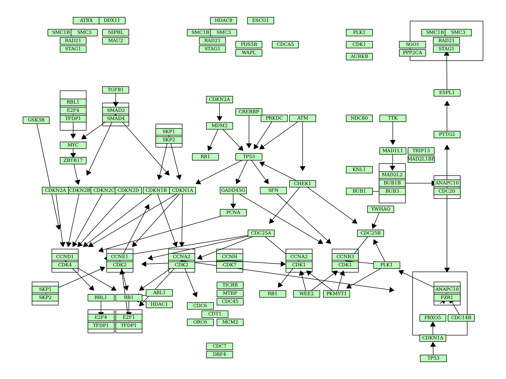
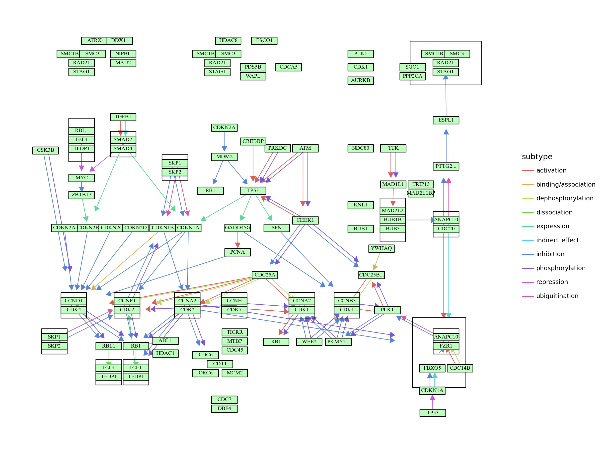
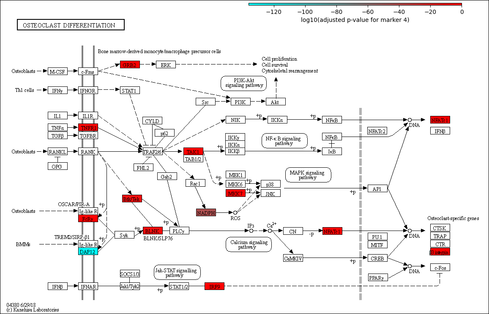
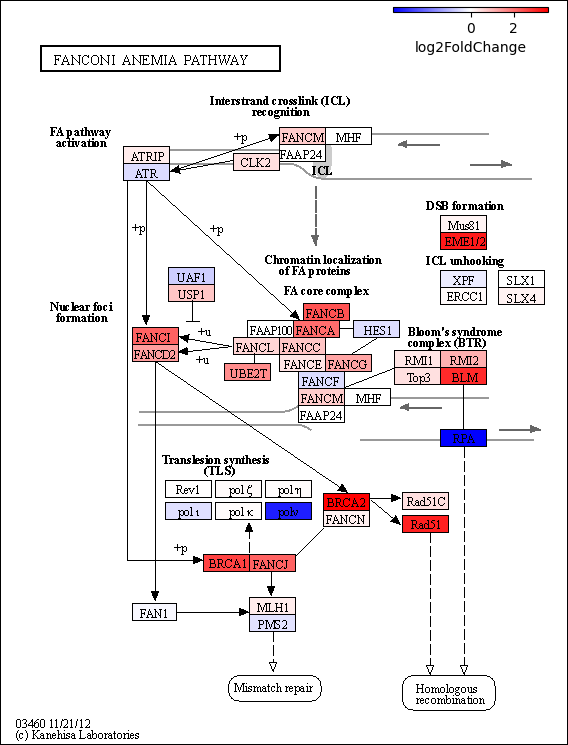
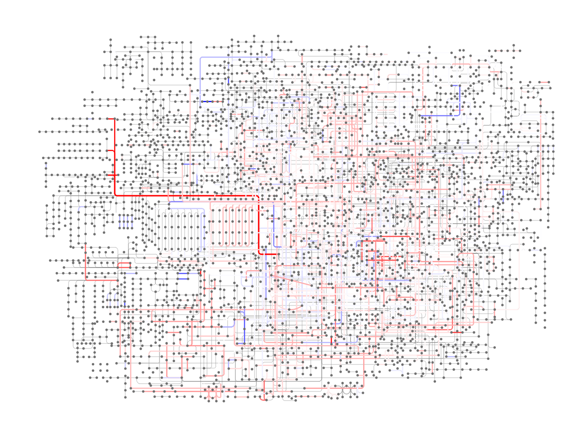
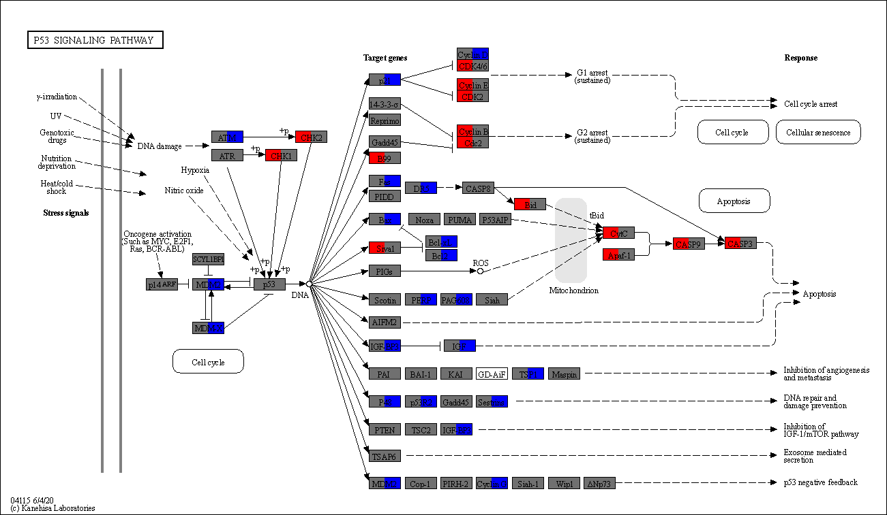

Notebooks
¶
Some notebooks are prepared for the example analysis.

Simple example using pykegg

Visualization of parallel edges using plotnine

Single-cell transcriptomics

Example usage with PyDESeq2

Drawing KEGG global and overview map

Visuailzing multiple enrichment analysis results
pykegg
Navigation
Getting started
Usage
API Reference
Example analysis
Notebooks
Simple example using pykegg
Visualization of parallel edges using plotnine
Single-cell transcriptomics
Example usage with PyDESeq2
Drawing KEGG global and overview map
Visuailzing multiple enrichment analysis results
Related Topics
Documentation overview
Previous:
API Reference
Next:
Simple example using pykegg
Quick search